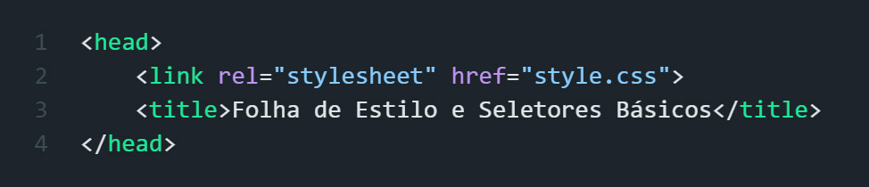

Adicionar todo o nosso CSS entre tags style vai criar documentos HTML enormes que são difíceis de editar.
Como foi feito na aula passada, nessa aula vamos mexer com folha de estilo externa.
Para tornar as páginas da Web mais gerenciáveis, podemos mover nosso CSS para uma folha de estilo ou um arquivo especial apenas para estilizar a página da Web.
Para incluir uma folha de estilo em um arquivo HTML, usamos o elemento link.
link é um elemento vazio de fechamento automático e vai para dentro do elemento head.
Para saber que tipo de arquivo incluir, a tag link de abertura precisa do relatributo definido usando rel="stylesheet".
Para especificar a localização da folha de estilo, defina o atributo href como "style.css".
Exemplo prático:

Se houver vários elementos do mesmo tipo em uma página da Web, seletores como h1, h2 ou p alteram todos esses elementos.
Se quisermos selecionar um ou mais elementos, podemos definir um "class" atributo para os elementos exatos que queremos alterar.
Na folha de estilo, podemos definir uma nova regra de classe com um "." seguido do nome da classe. Como aqui com ".gray-element".
As regras para a classe serão aplicadas a todos os elementos que possuem esse atributo de classe no arquivo html.
As classes não são únicas, então podemos definir a mesma classe para vários elementos. Como aqui, por exemplo, com class = "gray-element".
Para definir uma classe como um seletor em CSS, adicione um ponto seguido do nome da classe. Neste caso, é .gray-element.
Como aplicamos um estilo a um ou mais, mas não a todos os elementos de uma página da Web?
Com o seletor de classe.
O que forma uma regra?
Somente proriedades e valores formam uma regra CSS.
Vimos como podemos usar tags HTML e classes CSS para alterar os estilos de grupos de elementos.
Se quisermos estilizar um elemento específico, podemos incluir um seletor id.
Precisamos identificar o elemento no html.
Para definir um atributo de id, digite id=""; após o sinal =, defina o valor do id.
Os valores de ID devem ser exclusivos no documento HTML.
Portanto, não devemos incluir um segundo atributo id com o mesmo valor.
Agora que incluímos o id no elemento HTML, estamos prontos para usar o seletor id para nossos estilos.
Para selecionar o elemento pelo seu id, digitamos # seguido do nome do id.
Os IDs nos ajudarão com o JavaScript e não devemos usá-los demais para estilizar. No entanto, podemos aplicar estilos como de costume com o seletor id.
Para que servem os IDs?
IDs identificam elementos HTML exclusivos.
Como definimos um atributo de ID no arquivo html?
Digitando id na tag de abertura.
Por que dizemos que IDs são únicos?
Porque dois elementos não devem ter o mesmo ID.
Personalizei essa página de forma toda cagada sem estrutura nem nada o que torna muito díficil personaliza-la, tudo isso não passa de uma maquiagem mal feita e não responsiva.